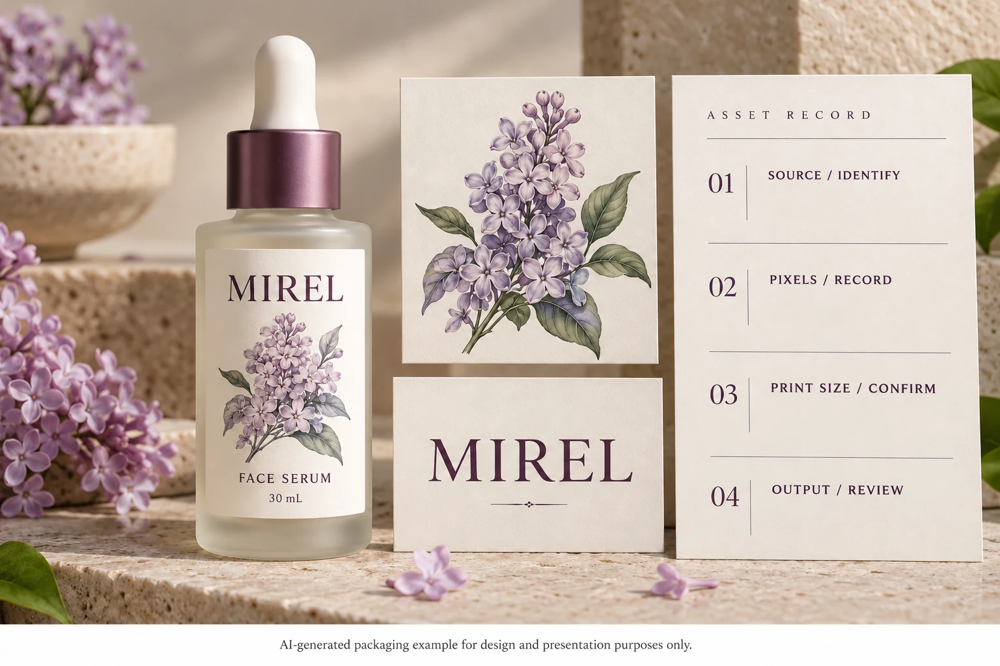

Find out what is inside the supplied artwork
Separate raster assets from vector elements. Raster artwork uses pixels; vector objects describe shapes. A production document can contain both, together with text and raster effects. Changing the file extension or placing an image inside an Illustrator document does not, by itself, reconstruct its detail as vectors.
Adobe's bitmap-image guidance explains that raster images contain a fixed number of pixels and are resolution-dependent. It connects appropriate resolution to final output and recommends consulting prepress before production decisions.
Ask the designer to identify the actual logo and illustration sources. A PDF, AI or SVG may contain a placed raster image. Conversely, a photograph is naturally a raster asset; it does not become unsuitable merely because it is not vector artwork.
The digital proofing guide covers the broader artwork conversation. This check focuses on whether the source elements support their intended printed size.
Calculate effective resolution at the placed size
For a raster image, divide its pixel width by its placed width in inches. Do the equivalent calculation for height where needed. Use the intended placement rather than the dimensions of the whole label or a website preview.
Consider a hypothetical image that is 600 pixels wide. Placed at 2 inches wide, it contains 300 pixels per inch across that placement. At 4 inches wide, the same pixels provide 150 pixels per inch. That arithmetic explains the effect of enlargement; it is not a recommendation that either value is sufficient for your label.
Have the designer or prepress team judge the result against the intended print process, image type and required detail. Fine line artwork, a soft photographic background and small rasterized text can need different attention. This guide sets no universal PPI threshold for all cosmetic label assets.
Do not mistake a resolution tag for recovered detail
If the source contains too little useful information, changing a resolution field without adding genuine source detail does not recover the original drawing or photograph. Resampling can change the number of pixels, but an increased count is not proof that the missing brand detail has been restored correctly.
Ask for the original logo artwork, a higher-quality photograph or the designer's legitimate source file. Where reconstruction is proposed, have the brand review the result as changed artwork. Do not quietly replace a distinctive letterform or botanical feature because an automated enlargement looks smoother.
Sometimes the existing asset can be used at a smaller size, or the design can change to use a suitable alternative. Those are design choices for approval, not permission to substitute artwork without asking the brand's responsible reviewer.
Review important details and the complete label
Inspect the intended print size and an enlarged view for different purposes. Actual size helps assess readability and hierarchy. Enlargement helps locate artifacts or identify which source element needs attention. Neither a tiny preview nor extreme magnification alone establishes acceptable printing.
Record what matters: a logo edge, small lettering already baked into an image, a thin line in an illustration or a visible compression artifact. Send that location to the designer. A specific observation is easier to resolve than a request to make the entire PDF high resolution.
Keep this task distinct from font handling. Live text in a PDF has its own portability checks; see the PDF font approval guide. A sharp background image does not establish that the text uses the intended fonts.

Build an asset record the designer can act on
Use this editorial worksheet with the actual source files:
| Field | Useful information | Next decision |
|---|---|---|
| Asset identity | Logo, illustration or photo; source reference | Which element is under review? |
| Asset nature | Raster, vector or mixed, confirmed by designer | Which checks apply? |
| Raster dimensions | Actual pixel width and height | What information does the source contain? |
| Placement | Intended printed width and height, with units | What effective resolution results? |
| Required detail | Specific brand mark, line or image feature | What needs visual or prepress attention? |
| Correction | Replacement source, smaller placement or approved reconstruction | Which change should be reviewed? |
| Output | Exact exported file and reviewer | Did the correction survive into the released artwork? |
If the original is missing, record that gap. A printer can advise what can be reviewed from the available material, but procurement should not describe an unknown source as approved vector artwork.
Match the correction to the problem
A hypothetical small decorative image may have adequate information at its intended modest size. Rebuilding it simply because another project requested a higher number can add work without improving the actual decision.
A different design may enlarge a website logo across the full front panel. If its distinctive edges do not survive at that size, obtaining the proper source or approving a reconstruction is a relevant next step. The same website image can therefore support one placement and fail to support another.
After a correction, reopen the exact exported production file. Confirm that the intended asset and placement are present and ask prepress to review the relevant output. A newly supplied original does not help if the layout still links to the older preview.
Include source status in the quotation brief
For custom cosmetic labels, provide the bottle details, finished label size, artwork and quantity by design. Identify any asset whose source or final-size quality is unresolved. The custom label buying guide covers the remaining specification inputs.
Use the inquiry form to prepare the message, then send artwork and available source files by email or WhatsApp. The form does not upload attachments. Ask for the specific next file or review needed so the correction leads to an identifiable production release.